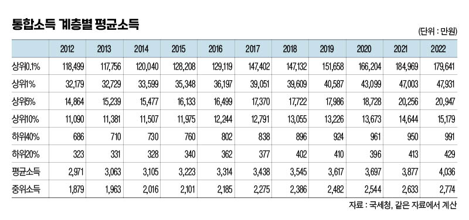
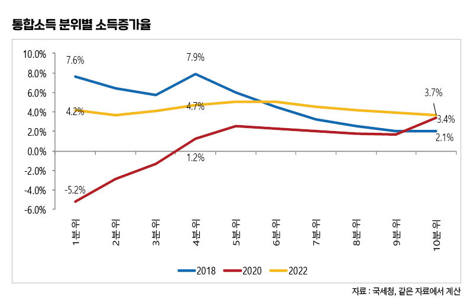
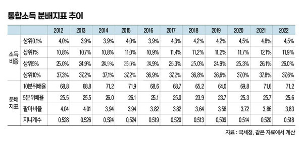

박영삼의 통계로 보는 노동
“근로소득자 5명 중 1명 종합소득 신고”
통합소득 천분위 분석 결과 … 2017년 이전 수준으로 돌아간 소득분배
국세청에 신고한 최신 개인소득 통계들이 공개되고 있다. 국세청이 근로소득 연말정산과 종합소득 확정신고 결과를 집계한 통계를 공개했고, 2월부터는 국회에 제출한 소득 천분위 자료 분석 결과들이 공개되고 있다. 이 글에서 분석한 자료는 기존에 공개된 2012~2021년 자료에 최근 국세청이 윤건영 더불어민주당 의원실에 제출한 통합소득과 근로소득, 종합소득 천분위 자료를 추가한 것이다.
국세청 소득신고 자료는 소득이 발생한 다음해 5월에 확정 신고하고 정산 및 환급 과정을 거쳐 그 해 연말에 가서야 공식 집계된다. 최근 공개된 소득통계는 2022년 귀속분 소득자료다.
한편 소득천분위 자료는 소득순으로 백분위를 구분한 다음 최상위 1%는 0.1% 구간으로 10개의 구간을 세분해 집계한 것을 말한다. 통합소득 천분위 자료는 근로소득이 있으면서 사업소득이나 이자배당소득, 기타소득 등이 발생해 종합소득까지 신고하는 인원에 대해 중복을 제거하고 개인별로 합산한 것을 말한다. 그러므로 통합소득 천분위 자료는 우리나라의 임금노동자와 자영업자, 프리랜서 등의 신고소득을 개인 단위로 통합한 자료라고 볼 수 있다. 다만 2천만원 미만 이자배당소득 등 분리과세하는 소득은 제외된다.
고소득층은 추가소득 늘어나고, 저소득층도 작은 일거리 찾아 나서
2022년 우리나라의 근로소득 연말정산 인원은 2천54만명으로 처음으로 2천만명을 돌파했다. 그리고 종합소득 확정신고 인원은 1천28만명으로 역시 처음으로 1천만명을 넘겼다. 그런데 근로소득과 종합소득 모두 신고하는 중복인원이 458만명에 달해 통합소득 인원은 2천623만명으로 최종 집계됐다.

최근 눈에 띄는 중요한 변화는 근로소득과 종합소득신고 모두 신고하는 사람들의 뚜렷한 증가 추세다. 2012년에 112만명 수준이던 중복신고 인원은 2020년에 276만명으로 늘어났고 2021년에는 394만명으로 1년 사이에 117만명이나 늘었다. 2022년에도 64만명이 다시 늘어 458만명 규모로 늘었다. 같은 기간 근로소득만 신고하는 인원은 2020년 1천673만명에서 2021년 1천602만명, 2022년 1천596만명으로 오히려 71만명, 6만명씩 줄어든 것과 대조를 보인다. 종합소득만 신고하는 인원도 매년 30만명 규모로 늘었지만 근로소득과 종합소득 모두 신고하는 인원의 증가폭은 이를 훨씬 넘어서는 규모다. 전체 근로소득자 5명 중 1명 이상이 종합소득신고를 병행하고 있고, 종합소득신고자의 절반가량이 근로소득이 있는 사람들이다.
상위소득자 가운데 기타소득이나 금융소득이 있는 사람들이 늘어나고 있고, 하위소득자 중에서도 플랫폼노동을 비롯한 여러 가지 일을 병행해야 하는 ’N잡러’가 늘어나는 상황을 반영하고 있는 것으로 볼 수 있다. 국세청의 신고절차 간소화와 소득파악률 개선 영향도 있다.
어쨌든 이같은 소득신고 유형이 다양화되는 상황에서 전체적인 개인소득 분배상황을 제대로 파악하기 위해서는 근로소득만이 아니라 종합소득 신고분까지 포함한 통합소득의 분포를 살펴보는 것이 점점 더 필요해지고 있다.
2022년 통합소득 기준 상위 10%의 평균소득은 1억5천179만원이었고 상위 5%는 2억947만원이며, 상위 1%에 속하는 26만명의 평균소득은 4억7천931만원이었다. 최상위 0.1%의 평균소득은 17억9천641만원에 달했다. 반면 하위 40%와 하위 20%의 평균소득은 991만원과 429만원에 불과했다. 근로소득 천분위 분석 결과와 비교하면 상위층의 평균소득은 근로소득보다 더 높아지고 하위층의 평균소득은 근로소득보다 더 낮아진다. 소득 분산이 더 커지는 것이다.

그런데 소득 10분위 소득증가율을 보면 2018년에는 소득이 가장 낮은 1분위와 최저임금 수준과 소득수준이 유사한 4분위의 소득증가율이 각각 7.6%, 7.9%로 가장 높았고 가장 소득이 높은 10분위가 2.1%로 가장 낮은 증가율을 기록했다. 반면 2020년 코로나 사태 때는 이와 정반대로 1분위의 소득증가율이 5.2%를 기록했고 10분위는 3.4%로 가장 높은 소득증가율을 보였다. 2022년에는 1~10분위의 소득증가율이 3~5% 수준에서 비슷한 증가율을 보였는데, 2022년의 소비자물가 상승률 5.1%를 감안하면 실질소득은 감소한 셈이다.

코로나 사태를 맞아 악화한 소득분배 상황은 좀처럼 개선되지 못하고 있다. 상위 10%가 전체소득에서 차지하는 비중은 37.6%로 코로나 사태 이후 가장 나빴던 2021년의 37.8%에 비해서는 0.2%포인트 감소했지만 2019년의 36.6%에 비해서는 1.1%포인트 증가한 것으로 2017년 이전 수준으로 돌아간 상황이다. 상위 0.1%, 1%, 5%의 소득점유율도 각각 4.5%, 11.9% 26.0%로 2021년에 비해서는 조금씩 하락했지만 2019년보다는 모두 늘어 상위계층의 소득점유는 더 늘어난 상태다.
한편 2017년 이후 2019년까지 2년 연속 크게 개선됐던 소득분배 지표 역시 2016년 이전 수준으로 후퇴했다. 하위 10% 소득대비 상위 10%의 소득배율을 뜻하는 10분위배율은 2019년에 64.0배로 역대 최저를 기록했지만 2022년에는 71.2배로 2015년 이전 수준으로 되돌아갔고, 하위 20% 대비 상위 20% 소득배율을 의미하는 5분위배율도 25.6배로 2016년 이전 수준으로 상승했다. 하위 40% 대비 상위 10%의 소득배율을 나타내는 팔마비율(3.83배)도 2016년 이전 수준을 보인다. 지니계수도 2022년에 0.518을 기록해 2018년 이전 수준과 비슷하다.

상위소득층은 계속 추가적인 소득을 얻고 있고 하위소득층은 그나마 적은 소득을 얻기 위해 다양한 일거리를 찾아 나서고 있다. 하지만 경제적 충격을 받은 이후 악화한 분배상황은 개선되지 못하고 있다. 이것이 통합소득 천분위 자료를 통해 확인할 수 있는 코로나 사태 이후 소득의 분배 양상이다.
고려대 노동문제연구소 노동데이터센터장 (youngsampk@gmail.com)